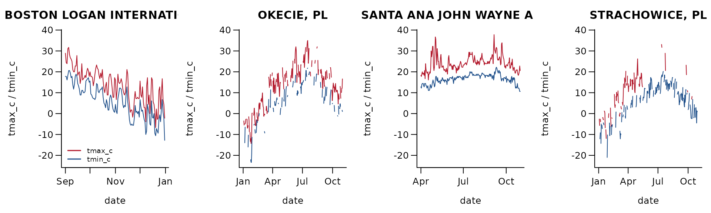
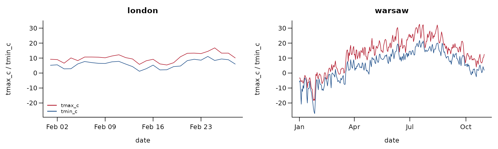
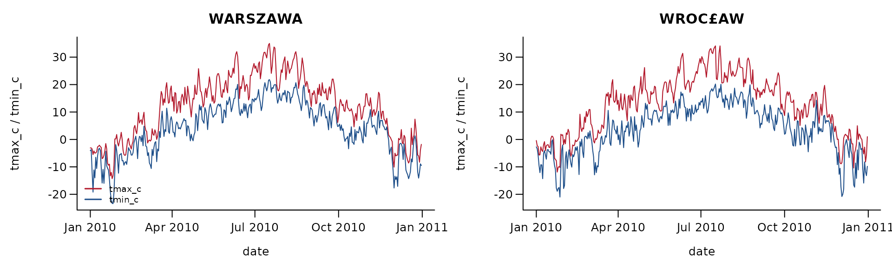
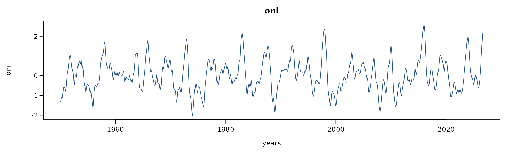
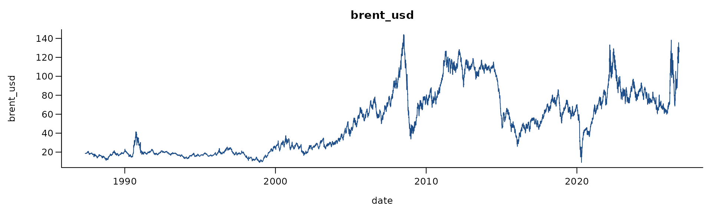
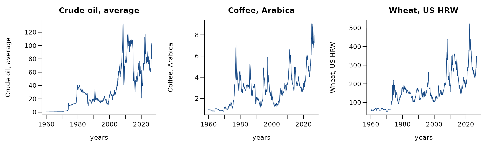
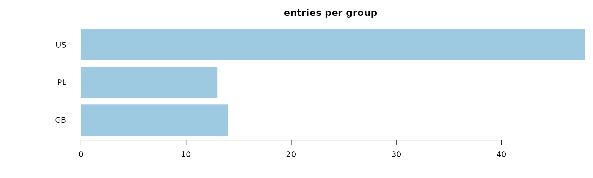
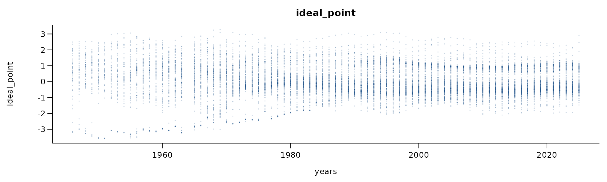
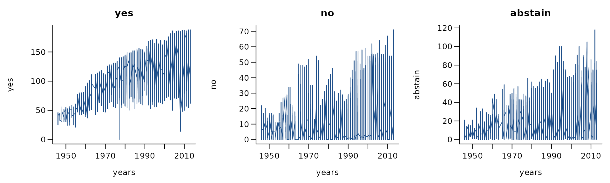

Time series that take one value at a time for every pair: weather at
the places and periods of the bundled event logs, the El Nino index, oil
and commodity prices, public holidays, and UN General Assembly voting.
They enter relational event models as global covariates through
time-shifted sampling
(sample_non_events(shift = "exponential")).
The data catalogue lists every dataset with its licence. Figures and numbers on this page are aggregates computed from the files as published; each section links the source and the code that reads it.
| dataset | events | actors | licence | amorem |
|---|---|---|---|---|
| NOAA GHCN-Daily weather for the bundled logs’ periods | 944 | public domain (US Government work) | bundled as daily_weather
|
|
| Open-Meteo historical weather, London 2026 and Warsaw 2010 | 332 | CC BY 4.0 | can bundle | |
| IMGW daily synoptic weather, Poland 2010 | 730 | Polish public-sector open data re-use | can bundle | |
| NOAA CPC ENSO indices (ONI, SST indices) | 920 | public domain (US Government work) | bundled as oni
|
|
| EIA daily Brent and WTI spot prices | 9,108 | public domain (US Government work) | can bundle | |
| World Bank commodity prices (Pink Sheet) | 801 | CC BY 4.0 | can bundle | |
| Public holidays (Nager.Date API): PL 2010, US 2004/2008/2009, GB 2026 | 75 | facts (holiday dates); API terms not recorded | bundled as public_holidays
|
|
| UN General Assembly ideal points | 11,612 | CC0 1.0 | can bundle | |
| UN General Assembly roll-call votes 1946-2013 | 4,497 | CC0 1.0 | can bundle |
NOAA GHCN-Daily weather for the bundled logs’ periods
Source: https://www.ncei.noaa.gov/ · Licence: public
domain (US Government work) · Status in amorem: bundled as
daily_weather.

944 observations. tmax_c: mean 16.2, sd
10, range -14.3 to 37.8, 26.4% missing; tmin_c: mean 8.95,
sd 8.94, range -23.4 to 22.2, 25.7% missing; prcp_mm: mean
2.05, sd 6.37, range 0 to 68.1, 0.5% missing. daily weather at Boston
Logan (Sep-Dec 2008), Santa Ana (Apr-Oct 2004), Warsaw and Wroclaw
(Jan-Oct 2010)
Get the data
download.file("https://www.ncei.noaa.gov/access/services/data/v1?dataset=daily-summaries&dataTypes=TMAX,TMIN,PRCP,SNOW,SNWD&format=csv&units=metric&includeStationName=true&includeStationLocation=1&includeAttributes=true&stations=USW00014739&startDate=2008-09-01&endDate=2008-12-31", "ghcnd_USW00014739_boston-logan_2008-09-01_2008-12-31.csv", mode = "wb")
download.file("https://www.ncei.noaa.gov/access/services/data/v1?dataset=daily-summaries&dataTypes=TMAX,TMIN,PRCP,SNOW,SNWD&format=csv&units=metric&includeStationName=true&includeStationLocation=1&includeAttributes=true&stations=USW00093184&startDate=2004-04-01&endDate=2004-10-31", "ghcnd_USW00093184_santa-ana-jwa_2004-04-01_2004-10-31.csv", mode = "wb")
download.file("https://www.ncei.noaa.gov/access/services/data/v1?dataset=daily-summaries&dataTypes=TMAX,TMIN,PRCP,SNOW,SNWD&format=csv&units=metric&includeStationName=true&includeStationLocation=1&includeAttributes=true&stations=PLM00012375&startDate=2010-01-01&endDate=2010-10-31", "ghcnd_PLM00012375_warsaw-okecie_2010-01-01_2010-10-31.csv", mode = "wb")
download.file("https://www.ncei.noaa.gov/access/services/data/v1?dataset=daily-summaries&dataTypes=TMAX,TMIN,PRCP,SNOW,SNWD&format=csv&units=metric&includeStationName=true&includeStationLocation=1&includeAttributes=true&stations=PLM00012424&startDate=2010-01-01&endDate=2010-10-31", "ghcnd_PLM00012424_wroclaw-strachowice_2010-01-01_2010-10-31.csv", mode = "wb")The reader is readers[["noaa-ghcnd-weather"]] in data-raw/catalogue/readers.R.
Open-Meteo historical weather, London 2026 and Warsaw 2010
Source: https://open-meteo.com/en/licence · Licence: CC BY 4.0 · Status in amorem: may be redistributed with attribution.

332 observations. tmax_c: mean 12.7, sd
10.3, range -18.4 to 32.6, 0.0% missing; tmin_c: mean 5.41,
sd 9.15, range -27.1 to 21.8, 0.0% missing; prcp_mm: mean
2.32, sd 4.51, range 0 to 33.4, 0.0% missing. reanalysis-based daily
weather for London (Feb 2026) and Warsaw (Jan-Oct 2010)
Get the data
download.file("https://archive-api.open-meteo.com/v1/archive?latitude=51.5072&longitude=-0.1276&start_date=2026-02-01&end_date=2026-02-28&daily=temperature_2m_max,temperature_2m_min,precipitation_sum,rain_sum,snowfall_sum&timezone=auto&format=csv", "openmeteo_london_2026-02-01_2026-02-28.csv", mode = "wb")
download.file("https://archive-api.open-meteo.com/v1/archive?latitude=52.2297&longitude=21.0122&start_date=2010-01-01&end_date=2010-10-31&daily=temperature_2m_max,temperature_2m_min,precipitation_sum,rain_sum,snowfall_sum&timezone=auto&format=csv", "openmeteo_warsaw_2010-01-01_2010-10-31.csv", mode = "wb")The reader is readers[["open-meteo-weather"]] in data-raw/catalogue/readers.R.
IMGW daily synoptic weather, Poland 2010
Source: https://danepubliczne.imgw.pl/ · Licence: Polish public-sector open data re-use · Status in amorem: may be redistributed with attribution.

730 observations. tmax_c: mean 12.4, sd
10.9, range -14.3 to 35, 0.0% missing; tmin_c: mean 3.96,
sd 9.31, range -23.4 to 21.8, 0.0% missing; tmean_c: mean
8.09, sd 9.8, range -19.3 to 28.7, 0.0% missing; prcp_mm:
mean 2.04, sd 5.26, range 0 to 53.2, 0.0% missing. IMGW synoptic daily
records, Warsaw-Okecie (375) and Wroclaw (424), 2010; columns per
s_d_format.txt
Get the data
download.file("https://danepubliczne.imgw.pl/data/dane_pomiarowo_obserwacyjne/dane_meteorologiczne/dobowe/synop/2010/2010_375_s.zip", "2010_375_s.zip", mode = "wb")
download.file("https://danepubliczne.imgw.pl/data/dane_pomiarowo_obserwacyjne/dane_meteorologiczne/dobowe/synop/2010/2010_424_s.zip", "2010_424_s.zip", mode = "wb")
download.file("https://danepubliczne.imgw.pl/data/dane_pomiarowo_obserwacyjne/dane_meteorologiczne/dobowe/synop/s_d_format.txt", "s_d_format.txt", mode = "wb")
download.file("https://danepubliczne.imgw.pl/data/dane_pomiarowo_obserwacyjne/dane_meteorologiczne/dobowe/synop/s_d_t_format.txt", "s_d_t_format.txt", mode = "wb")
download.file("https://danepubliczne.imgw.pl/docs/regulamin_udostepniania_danych.pdf", "regulamin_udostepniania_danych.pdf", mode = "wb")The reader is readers[["imgw-synop-daily-2010"]] in data-raw/catalogue/readers.R.
NOAA CPC ENSO indices (ONI, SST indices)
Source: https://www.cpc.ncep.noaa.gov/ · Licence:
public domain (US Government work) · Status in amorem: bundled
as oni.

920 observations. oni: mean 0.021, sd
0.79, range -2.04 to 2.59, 0.0% missing. Oceanic Nino Index, three-month
running means since 1950
Get the data
download.file("https://www.cpc.ncep.noaa.gov/data/indices/oni.ascii.txt", "oni.ascii.txt", mode = "wb")
download.file("https://www.cpc.ncep.noaa.gov/data/indices/sstoi.indices", "sstoi.indices", mode = "wb")The reader is readers[["noaa-enso"]] in data-raw/catalogue/readers.R.
EIA daily Brent and WTI spot prices
Source: https://www.eia.gov/about/copyrights_reuse.php · Licence: public domain (US Government work) · Status in amorem: may be redistributed with attribution.

9,108 observations. brent_usd: mean
54.5, sd 33, range 9.1 to 144, 0.0% missing. Brent spot price, US
dollars per barrel, daily (EIA); WTI in the same folder
Get the data
download.file("https://www.eia.gov/dnav/pet/hist_xls/RBRTEd.xls", "RBRTEd.xls", mode = "wb")
download.file("https://www.eia.gov/dnav/pet/hist_xls/RWTCd.xls", "RWTCd.xls", mode = "wb")The reader is readers[["eia-oil-prices"]] in data-raw/catalogue/readers.R.
World Bank commodity prices (Pink Sheet)
Source: https://www.worldbank.org/en/research/commodity-markets · Licence: CC BY 4.0 · Status in amorem: may be redistributed with attribution.

801 observations. Crude oil, average:
mean 34.5, sd 31.7, range 1.2 to 133, 0.0% missing;
Coffee, Arabica: mean 2.79, sd 1.63, range 0.78 to 9.05,
0.0% missing; Wheat, US HRW: mean 166, sd 85, range 52.2 to
522, 0.0% missing; Copper: mean 3511, sd 2950, range 607 to
14474, 0.0% missing; Gold: mean 668, sd 795, range 35 to
5020, 0.0% missing. World Bank monthly commodity prices since 1960
(selected series)
Get the data
download.file("https://thedocs.worldbank.org/en/doc/74e8be41ceb20fa0da750cda2f6b9e4e-0050012026/related/CMO-Historical-Data-Monthly.xlsx", "CMO-Historical-Data-Monthly.xlsx", mode = "wb")
download.file("https://thedocs.worldbank.org/en/doc/74e8be41ceb20fa0da750cda2f6b9e4e-0050012026/related/CMO-Historical-Data-Annual.xlsx", "CMO-Historical-Data-Annual.xlsx", mode = "wb")The reader is readers[["worldbank-pinksheet"]] in data-raw/catalogue/readers.R.
Public holidays (Nager.Date API): PL 2010, US 2004/2008/2009, GB 2026
Source: https://date.nager.at/ · Licence: facts
(holiday dates); API terms not recorded · Status in amorem:
bundled as public_holidays.

75 entries. public holidays: PL 2010, US 2004/2008/2009, GB 2026
Get the data
download.file("https://date.nager.at/api/v3/PublicHolidays/2010/PL", "PL", mode = "wb")
download.file("https://date.nager.at/api/v3/PublicHolidays/2004/US", "US", mode = "wb")
download.file("https://date.nager.at/api/v3/PublicHolidays/2008/US", "US", mode = "wb")
download.file("https://date.nager.at/api/v3/PublicHolidays/2009/US", "US", mode = "wb")
download.file("https://date.nager.at/api/v3/PublicHolidays/2026/GB", "GB", mode = "wb")The reader is readers[["nager-date-holidays"]] in data-raw/catalogue/readers.R.
UN General Assembly ideal points
Source: https://doi.org/10.7910/DVN/LEJUQZ · Licence: CC0 1.0 · Status in amorem: may be redistributed with attribution.

11,612 observations. ideal_point: mean
-0.00000000048, sd 0.98, range -3.6 to 3.27, 0.0% missing. UN General
Assembly ideal points per country and session
Get the data
download.file("https://dataverse.harvard.edu/api/access/datafile/14098429?format=original", "IdealpointestimatesFP_2026FP.csv", mode = "wb")
download.file("https://dataverse.harvard.edu/api/access/datafile/13642024?format=original", "Codebook_IdealPointEstimates1946-2025.txt", mode = "wb")The reader is readers[["unga-ideal-points"]] in data-raw/catalogue/readers.R.
UN General Assembly roll-call votes 1946-2013
Source: https://doi.org/10.7910/DVN/7UBUUI · Licence: CC0 1.0 · Status in amorem: may be redistributed with attribution.

4,497 observations. yes: mean 120, sd
32.2, range 0 to 188, 0.0% missing; no: mean 7.14, sd 11.7,
range 0 to 71, 0.0% missing; abstain: mean 17.2, sd 17.2,
range 0 to 118, 0.0% missing. UN General Assembly roll calls: yes, no
and abstention counts per resolution
Get the data
download.file("https://dataverse.harvard.edu/api/access/datafile/2777964?format=original", "un_rc_3.txt", mode = "wb")
download.file("https://dataverse.harvard.edu/api/access/datafile/2777965?format=original", "Warntjen_UNGA_Voting-1946-2013.pdf", mode = "wb")The reader is readers[["unga-votes-1946-2013"]] in data-raw/catalogue/readers.R.